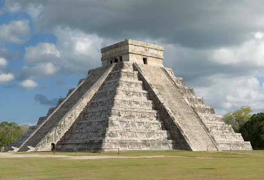
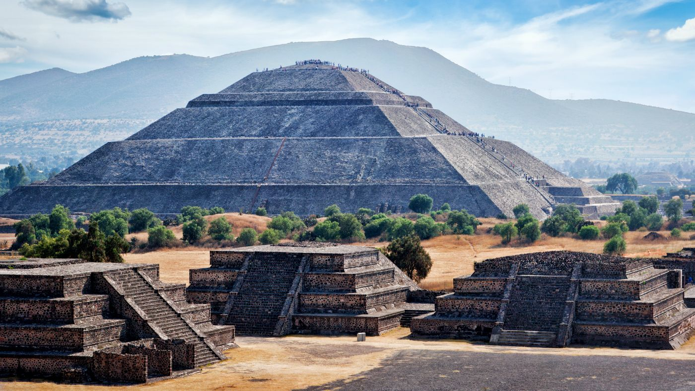

Ny-Eu-ban a XV. Század közepétől nőtt a népesség, emiatt megjelent az igény a fűszerek és luxuscikkek iránt és mindennapi áruk iránt
A ny-eu-i gazdaság nagymértékben igényelte a nemesfémből vert pénzérméket , mert a keletről érkező árucikkekért csak ezzel lehetett fizetni
Mivel az áru nőtt ezért kelet kiszivattyúzta a nemesfémet Eu-ból
A térséget uraló oszmánok emelték az adókat
Kezdtek kimerülni a cseh és a magyar nemesfémbányák
Fejlődött a tudományos élet: Föld gömb alakú
Új technikai eszközök:tájoló, karavella (hajó)
Cél: új kereskedelmi útvonal keresése Kelet felé
Indián kultúrák
mayák:
Yucatán-fsz., piramis, fejlett matematika, csillagászat

aztékok:
Közép-Amerika nagy része, földművelő nép (kukorica, bab, tök, paradicsom, kakaó, gyapot, dohány), despotikus állam, emberáldozatok

inkák:
Andok-hg., teraszos, öntözéses földművelés, despotikus uralkodó
Spanyol gyarmatosítás
fogalma:
a felfedezéseket követő hódítások utáni területszerzés, a gyarmatosított területek az anyaország fennhatósága alatt álltak, az onnan származó hivatalnokok kormányozták
a konkvisztádorok (hódítók) könnyen legyőzték az indiánokat (Cortes 500 emberrel az aztékokat, Pizzaro 180 emberrel az inkákat)
az elfoglalt területeket alkirályságokra osztották, amit a király irányított és mellette állt az Indiák Tanácsa
létrehoztak 22 püspökséget és 3 érsekséget
a szerzetesrendek missziókat létesítettek
a gyarmatokon birtokokat adományoztak (ültetvények, melyeken először indiánok, később afrikai rabszolgák dolgoztak, cukornád, gyapot, indigó)
az európaiak által bevitt betegségek miatt népességcsökkenés az Újvilágban
elvették az indiánok szabadságát
Világkereskedelem kialakulása
a növények az ültetvényekről (kukorica, dohány, cukornád, indigó, kakaó, burgonya) Eu-ba áramlottak, Európából visszafelé iparcikkek
a rengeteg beáramló arany és ezüst inflációt okozott Eu-ban, ezzel párhuzamosan nőtt az élelmiszerek ára, így árszintemelkedés következett be (ezt nevezik árforradalomnak)
rabszolga kereskedelem: Amerikából cukornád (melasz)->Európába, itt készítenek belőle rumot-> Afrikába, itt vesznek érte rabszolgát->Amerikába
A levantei kereskedelem háttérbe szorult, a kereskedelmi útvonalak áthelyeződtek az Atlanti-óceánra->új kikötővárosok alakultak (Lisszabon, Amszterdam)
Bekerítés:
Angliában végbemenő folyamat, a növekvő gyapjúigény kielégítésére megnövelték a legelőket a szántóföldek rovására. Ezeket elkerítették, a parasztokat és a szabad bérlőket elűzték a földjükről és a manufaktúrák bérmunkásaivá váltak.
Kialakult Angliában egy új társadalmi réteg, a gentry: földbirtokosok, akik jelentős hasznot húztak a bekerítésekből, és jelentős befolyással bírtak.
Új termelési forma: manufaktúra: itt bérmunkások dolgoztak munkamegosztással, mindenki egy munkafolyamathoz értett, tömegesen termeltek, az áruk olcsóbbak lettek, minőségük romlott.